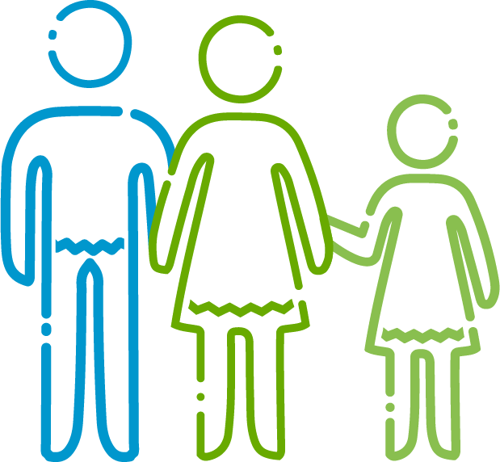
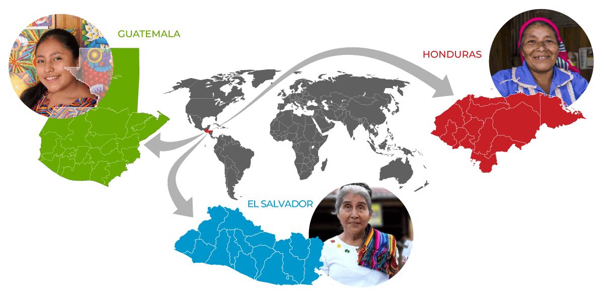

Economic empowerment of Indigenous women and girls
The Indigenous Women’s Economic Empowerment Initative (I-WEE) aims to promote the economic empowerment of Indigenous women and girls, by strengthening their skills and abilities, generating enabling environments for the active participation and advocacy, and strengthening productive initiatives led by Indigenous women. This initiative takes place in Central America: Guatemala, Honduras and El Salvador.
The initiative was launched in 2020 and is funded by the United States Agency for International Development (USAID) and the Forest Stewardship Council (FSC).
INDIGENOUS WOMEN AS AGENTS OF CHANGE

Indigenous women are key agents on the development of Indigenous Peoples. Indigenous women are the protectors of ancestral knowledge, cultural and traditional practices as well as of their linguistic identity. They are transmitters of knowledge from generation to generation, therefore, they are fully aware of the needs, problems, and challenges faced by their families, communities and organizations. Its strategic role allows them to manage and prioritize actions to promote holistic well-being.
However, Indigenous women have been facing different challenges associated to discrimination and exclusion, what increase their vulnerabilities. Promoting their active participation in decision-making, defending their rights and supporting their economic sustainability, is essential for their development, families and communities’ development.
WHAT WE DO
Capacity Development
Training programs for Indigenous women on leadership, organizational capacities, negotiation and assertive communication skills, rights and identity defense.
Capacity development on gender-based violence prevention actions and access to justice.
Integral training programs for municipal authorities to learn on how to work with and for Indigenous Peoples.
Active Participation
Development of instruments ensuring Indigenous women can effectively participate, while promoting their political and social incidence capacity.
Advocacy plan to achieve data disaggregation at national level, considering Indigenous women and girls’ specificities.
Creating the observatory of women and Indigenous Peoples.
Conducting regional meetings for knowledge exchange and practices around political and social advocacy.
Economic Empowerment
Strengthening gender-sensitive value chains.
Development and strengthening of sustainable productive initiatives.
Digital platform to promote e-commerce and entrepreneurship linked to Indigenous arts and culture.
Center for Indigenous Innovation and Entrepreneurial Development (CIDEI)
Economic empowerment through education and training on STEM tools for Indigenous girls.
WHERE WE WORK
I-WEE team
Read our latest I-WEE news
Indigenous women’s organizations of Quetzaltenango and Totonicapán, Guatemala gathered to share knowledge, experiences, and strategies, and dialogue with stakeholders.
› Read moreEighty women leaders gathered to exchange experiences and knowledge
› Read moreLearn how preserving, revitalizing and promoting Indigenous languages contributes to environmental stewardship
› Read moreAt COP28, Indigenous women leaders from Africa, Mesoamerica and Asia share perceptions of climate change and their actions to resist its effects.
› Read more